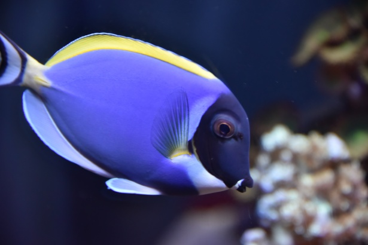
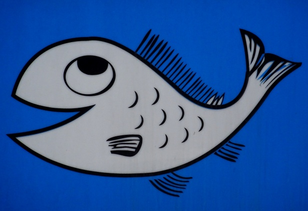
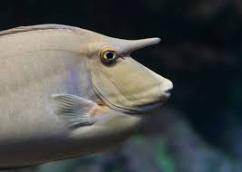

Många av havens fiskebestånd är överutnyttjade och det krävs därför en global ansträngning i syfte att vidta åtgärder som gynnar återuppbyggnaden av hotade bestånd. För att så långsiktigt som möjligt säkra hållbara fiskebestånd bör fisket baseras på uppfyllande av maximalt hållbart uttag och hänsyn tas till särskilda förutsättningar i specifika regioner och havsområden. En tillväxt baserad på havens resurser visar på havens resurser visar på den potential haven har för global utveckling, inklusive fattigdomsbekämpning. Vattenbruket har i det här avseendet en nyckelroll och är en del i att trygga livsmedelsförsörjningen, under förutsättning att det sker hållbart.
Det är viktigt att fortsatt utveckla åtgärder och förvaltningsverktyg, för att hantera kända påverkansfaktorer som föroreningar, utfiskning och utvinning av naturresurser. Skydd och restaurering av kust och havsområden är nyckelåtgärder för att bevara biologisk mångfald och fiskeresurser men även för att stärka motståndskraften mot klimatförändringar. Nya ytterligare utmaningar för att säkra havens produktion av livsmedel är marint skräp, inklusive mikroplaster, och i synnerhet havsförsurningen som visar på vikten av att koppla ihop havsfrågorna med arbetet med klimatförändringar.
14.1 Till 2025 förebygga och avsevärt minska alla slags föroreningar i havet, i synnerhet från landbaserad verksamhet, inklusive marint skräp och tillförsel av näringsämnen.
14.3 Minimera och åtgärda med havsförsurningens konsekvenser, bland annat genom ökat vetenskapligt samarbete på alla nivåer.
14.4 Senast 2020 införa en effektiv fångstreglering och stoppa överfiske, olagligt, orapporterat och oreglerat fiske liksom destruktiva fiskemetoder samt genomföra vetenskapligt baserade förvaltningsplaner i syfte att återställa fiskbestånden så snabbt som möjligt, åtminstone till de nivåer som kan producera maximalt hållbart uttag, fastställt utifrån deras biologiska egenskaper.
14.5 Senast 2020 skydda minst 10 procent av kust- och havsområdena, i överensstämmelse med nationell och internationell rätt och på grundval av bästa tillgängliga vetenskapliga rön.
14.6 Senast 2020 förbjuda vissa former av fiskesubventioner som bidrar till överkapacitet och överfiske, avskaffa subventioner som bidrar till olagligt, orapporterat och oreglerat fiske och avstå från att införa nya sådana subventioner, med erkännande av att en ändamålsenlig och effektiv särskild och differentierad behandling av utvecklingsländerna och de minst utvecklade länderna bör vara en integrerad del av förhandlingarna om fiskesubventioner i Världshandelsorganisationen.
14.7 Till 2030 öka den ekonomiska nyttan för små önationer under utveckling och de minst utvecklade länderna av ett hållbart nyttjande av marina resurser, bland annat genom en hållbar förvaltning av fiske, vattenbruk och turism.
14.a Öka den vetenskapliga kunskapen, utveckla forskningskapaciteten och överföra havsteknik, med hänsyn tagen till den mellanstatliga oceanografiska kommissionens kriterier och riktlinjer för överföring av havsteknik (Criteria and Guidelines on the Transfer of Marine Technology), i syfte att skapa friskare hav och öka den marina biologiska mångfaldens bidrag till utvecklingen i utvecklingsländerna, i synnerhet i små önationer under utveckling och de minst utvecklade länderna.
14.b Säkerställa tillträde för småskaliga icke-industriella fiskare till marina resurser och marknader.
14.c Stärka bevarandet och hållbart nyttjande av haven och havsresurserna genom att genomföra internationell rätt, såsom den kommer till uttryck i Förenta Nationernas havsrättskonvention (UNCLOS), som utgör den rättsliga ramen för bevarande och hållbart nyttjande av hav och havsresurser, vilket erinras om i punkt 158 i slutdokumentet The Future We Want från Förenta Nationernas konferens om hållbar utveckling (Rio+20).
Med beaktande av pågående förhandlingar i Världshandelsorganisationen, utvecklingsagendan från Doha och mandatet från ministermötet i Hongkong.